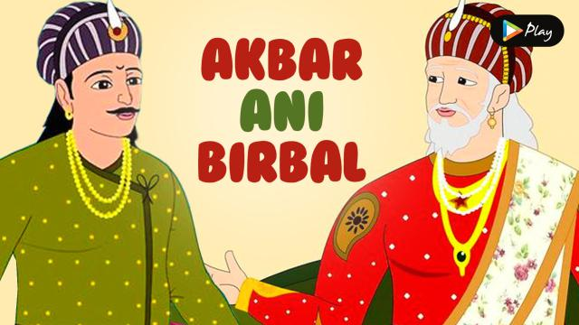

Count Wisely

One day, king Akbar asked a question in his court that left everyone in the courtroom puzzled. As they all tried to figure out the answer, Birbal walked in and asked what the matter was. They repeated the question to him.
The question was, “How many crows are there in the city?”
Birbal immediately smiled and went up to Akbar. He announced the answer; he said there were twenty-one thousand, five hundred and twenty-three crows in the city. When asked how he knew the answer, Birbal replied, “Ask your men to count the number of crows. If there are more, then the relatives of the crows must be visiting them from nearby cities. If there are fewer, then the crows from our city must be visiting their relatives who live outside the city.” Pleased with the answer, Akbar presented Birbal with a ruby and pearl chain.
The Ballet Dancer

There once was a girl named Bella, she was a ballet dancer and she absolutely loved ballet. She did ballet lessons every Monday and Friday. She never missed a lesson, she went when she had a cold and when she was still recovering of having a broken leg. She loved the concerts they did at the end of the year, she loved her lessons, she absolutely loved everything about ballet. Her teachers name was Kathy, she was strict but very kind as well, which in Bella’s eyes made her the perfect teacher. Bella had two sisters and a brother, their names were Rose (10), Samantha (10), Matthew (8). Rose and Samantha were twins, they never dressed the same because no one could tell them apart when they did. If they were annoyed with some one they would dress the same or in each others clothes and Rose would pretend she was Samantha and Samantha would pretend she was Rose. It sometimes got very annoying. Matthew absolutely loved soccer, he did training on Wednesdays and played a game on Saturdays. Right now her family was watching Matthew play a game of soccer, right now they were winning by two points. “I can’t wait till Monday” Bella said to her mum. “You’re going to have to” replied Bella’s mum. You see on Monday the ballet exams were being held. Excited as she was she was also worried, she kept thinking things like what if I forget my dance half way through. Her sisters did dancing as well but they did Jazz dancing. Jazz dancing is much faster than ballet, they started of doing ballet but soon started complaining that it was too slow and boring which is understandable because they usually going 100 miles an hour. So that’s why they started doing Jazz. But Bella didn’t think it was slow or boring, she thought of it as graceful and beautiful. Bella had often considered starting Jazz but she has seen her sisters do it and knew she would never be able to keep up. Finally Monday came and Bella met her best friend Kiara in the dancing hall change rooms. “I am so nervous” Kiara said to Bella “So am I but I’m really excited at the same time” Bella replied “I guess so” said Kiara but she didn’t look convinced, in face she was going really pale. “I’m going to be sick” said Kiara and ran to the toilets, Bella followed her. Kiara threw up nearly five times, a girl called Ella ran to get Kathy. Kathy came as soon as she’d heard, she called Kiara’s parents and told them to come pick her up, Kiara started crying “but the exams” she cried. Even when Kiara’s parents came to pick her up five minutes later she was still crying. Bella passed her exam but she didn’t do very well, her thoughts kept wandering back to Kiara. The days dragged by but finally it was Friday. It ended up that Kiara only had a stomach bug and was fine now. Bella was so relieved she could have burst with joy! Bella danced well from then on and on the night of the concert as soon as the curtains rose she started smiling, she danced better than she ever had before, she pointed her toes hard leaped high landed safely and didn’t stop smiling even as the curtains started to fall and she did her final leap. When everyone went on for the finale even though she couldn’t see parents and Matthew she knew they were in the crowd. She got two awards for doing the exam and for being the most improved dancer. She was so happy she couldn’t sleep that night. Bella knew that when she was older she would be a ballet dancer, she just knew maybe it was because she’d been wishing so long or that the trophies she got gave her courage, it didn’t matter that she was still young that was the best part, she had the rest of her life to practise.
The Proud Rose
Once upon a time, there was a beautiful rose plant in a garden. One rose flower on the plant was proud of its beauty. However, it was disappointed that it was growing next to an ugly cactus. Every day, the rose would insult the cactus about its looks, but the cactus stayed quiet. All the other plants in the garden tried to stop the rose from bullying the cactus, but the rose was too swayed by its own beauty to listen to anyone.
One summer, a well in the garden dried up and there was no water for the plants. The rose slowly began to wilt. The rose saw a sparrow dip its beak into the cactus for some water. The rose then felt ashamed for having made fun of the cactus all this time. But because it was in need of water, it went to ask the cactus if it could have some water. The kind cactus agreed, and they both got through summer as friends.